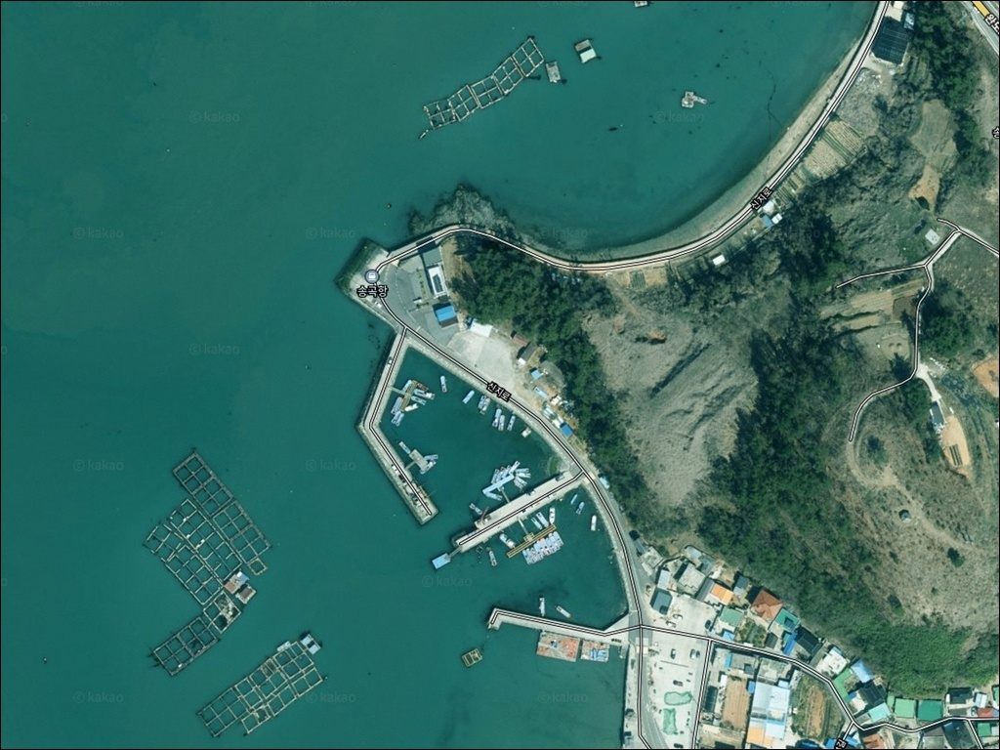
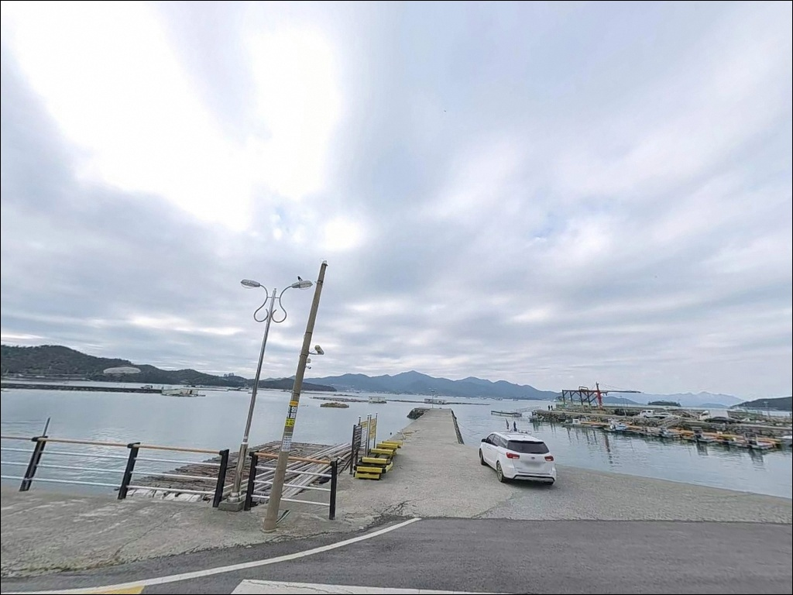
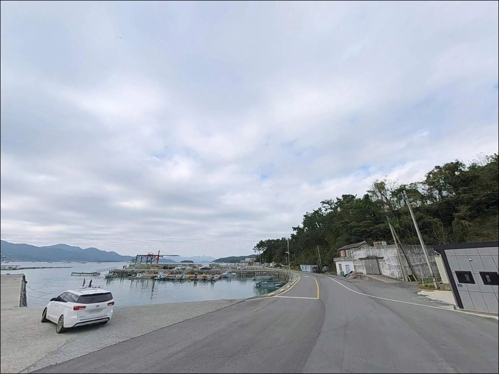
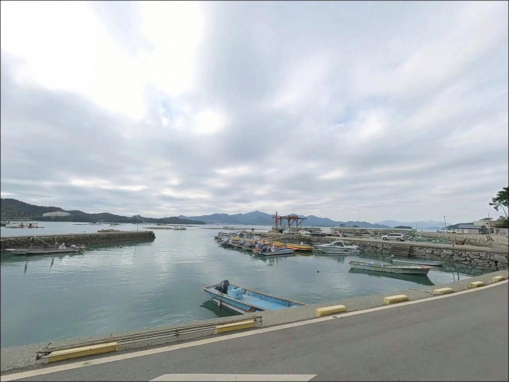
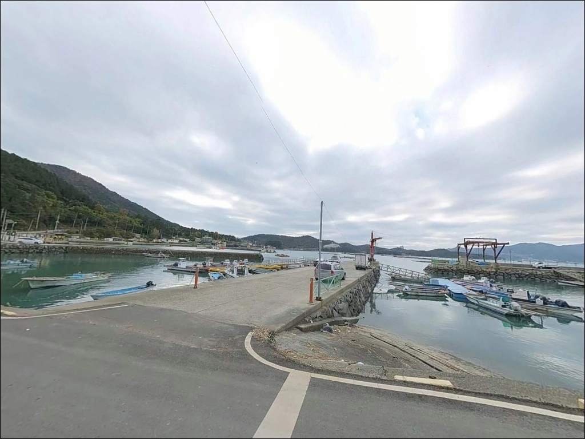
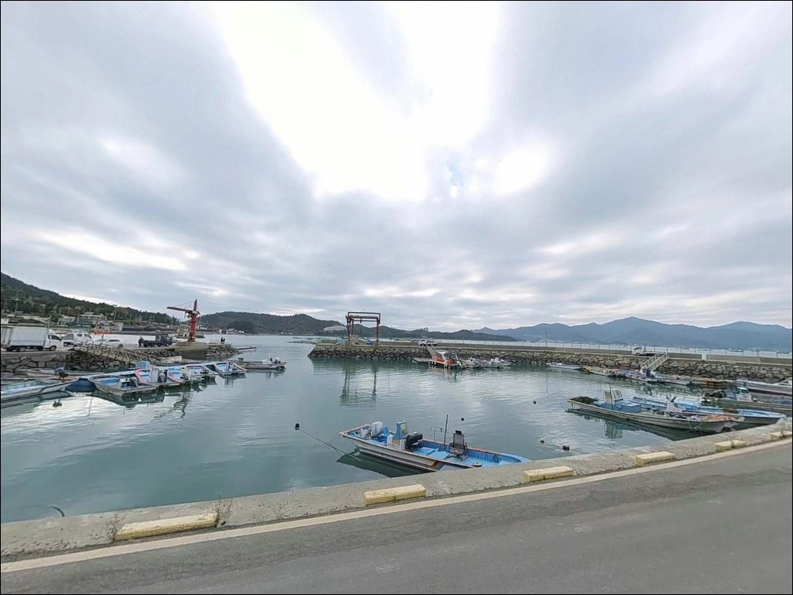
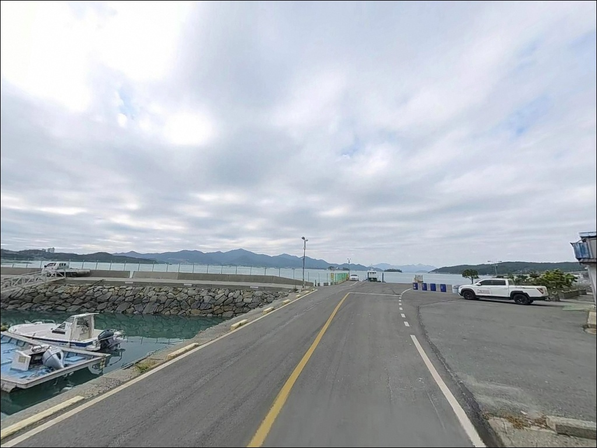
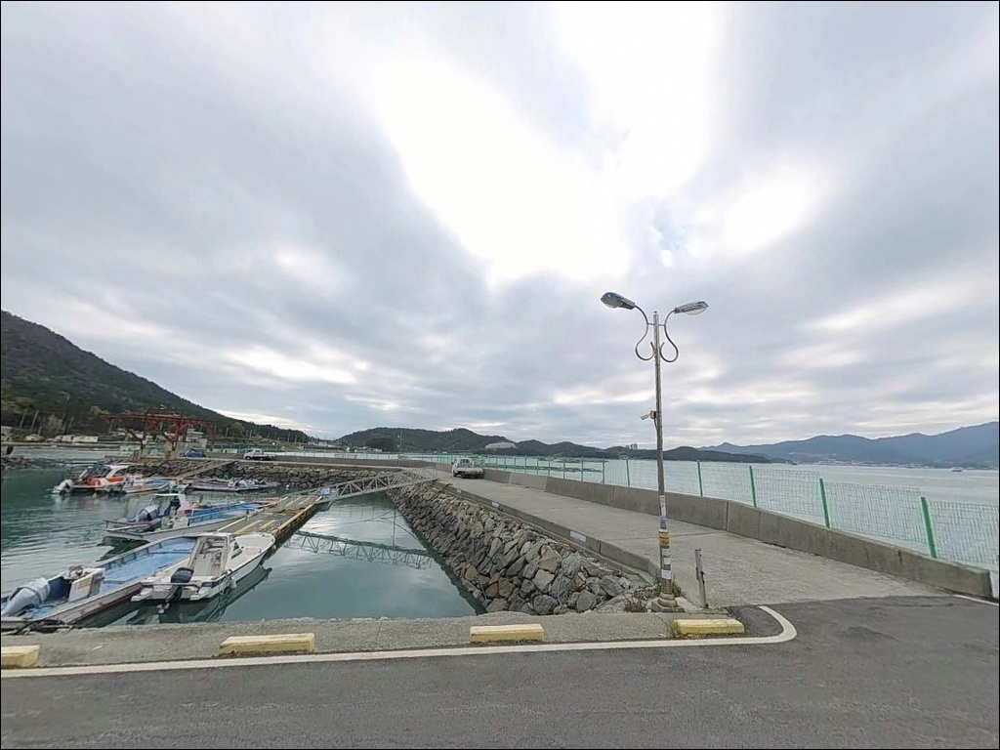
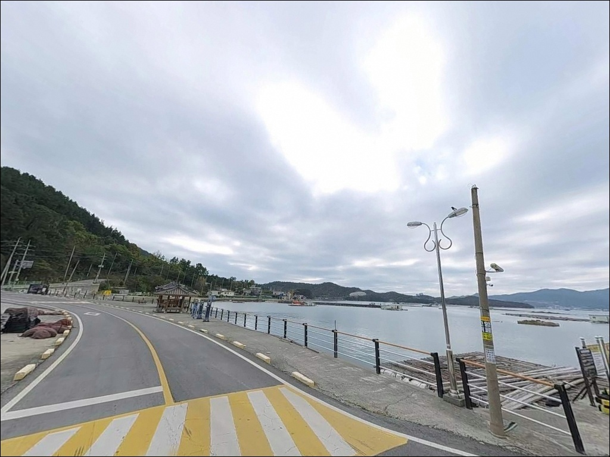

이 페이지에는 광고(제휴 링크 포함)가 있으며, 광고 링크를 통해 구매하면 운영자가 판매 수익 또는 수수료를 받을 수 있습니다. 포인트 사진: 카카오맵 스카이뷰·로드뷰. 이 페이지의 지도·사진 이미지는 카카오맵의 실제 서비스 이미지와 다를 수 있습니다.

송곡항(송곡선착장)
전남 완도군 신지면 송곡리 267-5
신지도에서 규모가 가장 큰 항구인 송곡항은
방파제 끝단이 외해 방향으로 열려 있고
수심 변화가 가파른 구조입니다.
들물이 흐르기 시작하면 조류가 눈에 띄게 살아나고
입질 타이밍이 집중되는 포인트입니다.
완도읍에서 신지대교를 건너
차량으로 10~15분 거리에 위치한 이 항구는
방파제 전방 20~30m 지점에서 수심 5m,
80m 지점에서는 10m에 달하는
뚜렷한 수심 변화 구조를 갖추고 있습니다.
원투낚시부터 에깅, 찌낚시까지
복수의 낚시 방식이 모두 유효한 지형입니다.
이 글은
송곡항의 진입 동선, 차박 여건,
물때 판단 기준, 낚시 스타일별 공략 조건에 집중합니다.
특정 어종 조황 보장이나
시설 운영 여부 단정은 이 글의 범위에 포함되지 않습니다.

완도읍에서 신지대교를 건너
신지도로 진입하면
포장도로가 항구까지 이어지는 구조입니다.
신지도 내부 간선도로는 2차선 수준으로
일반 승용차 기준 진입에 어려움이 없습니다.
다만 송곡리 마을 안쪽으로 깊이 들어가는 구간은
1차선 수준으로 폭이 좁아집니다.
대형 캠핑카나 장비를 가득 실은 차량이라면
진입 전 위성지도로 경로를 한 번 확인하는 편이 좋습니다.
마을 안쪽 도로는 어선 관련 차량이 수시로 통행하므로
양보 공간을 미리 파악해 두면 편합니다.
선착장 내부에는 비교적 넓은 시멘트 포장 부지가 있어
회차 여건은 양호한 편입니다.
주차는 방파제 입구 인근 공터와
항구 초입 평지 공간을 활용하는 것이 일반적입니다.
어선 작업 동선을 막지 않는 자리를
먼저 확인하고 주차하는 것이 기본 매너입니다.

송곡항은 선착장 규모가 넓어
주차 공간 확보는 어렵지 않은 편입니다.
항구 내부 시멘트 부지에 차를 세우고
바로 낚시를 이어갈 수 있는 동선이 가능합니다.
낚시 후 하룻밤 차 안에서 머무는 용도로는
공간적인 불편함은 크지 않은 구조입니다.
야간에는 민가가 방파제 인근에 위치하는 만큼
조명 사용과 발전기 소음에 주의가 필요합니다.
가로등 수가 많지 않아
야간 가시성이 완전히 밝지는 않습니다.
개인 헤드랜턴은 필수 장비이며,
과도한 라이트 사용은 인근 민가에 영향을 줄 수 있습니다.
방파제가 외해 방향으로 열려 있는 구조라
남풍·동풍 계열 기상 시 파도의 직접 영향을 받습니다.
기상 예보 확인은 출발 전 필수이며,
바람이 강한 날에는 차 안에서의 체류도
흔들림이 있을 수 있어 사전 기상 체크가 판단 기준이 됩니다.

신지면 소재지 방향으로 이동하면
기본적인 상점과 식당을 이용할 수 있습니다.
반경 3km 이내에 편의점이 확인되지 않으므로
식수와 얼음, 낚시 소품은
완도읍에서 미리 준비해 오는 것이 현실적입니다.
신지대교를 건너 완도읍까지는
차량 기준 약 15분 거리입니다.
대형 마트, 약국, 편의점, 낚시점이
완도읍 내에 집중되어 있어
부족한 소품이 생기면 이 동선이 가장 효율적입니다.
명사십리 해수욕장 방향으로 6~8km를 이동하면
편의점 이용이 가능합니다.
응급 상황 발생 시에는
완도읍에 위치한 완도군 보건의료원이
가장 가까운 의료 기관입니다.
섬 특성상 이동 거리가 있으므로
비상약품과 수분 보충용품은 출발 전 챙기는 것이 기본입니다.

송곡항 방문 전 가장 먼저 확인할 것은
물때입니다.
완도 동쪽 해역 조류는 반시계 방향으로 흐르며,
방파제 끝단이 이 조류를 직접 받는 구간에 위치합니다.
바다타임에서 신지면 기준 물때를 확인하고
들물 타이밍에 맞춰 출발 시각을 조정하는 것이
기본 전략입니다.
방파제 끝단과 사석 구간은
조수 간만에 따라 미끄러움이 심해집니다.
갯바위 전용 신발 착용이 권장되며,
끝단 진입 시 구명조끼는 반드시 착용합니다.
파고 1m 이상, 풍속 14m/s 이상 기상에서는
방파제 끝단 진입을 피하는 것이
해양경찰청 기준 안전 수칙입니다.
가두리 양식장이 방파제 인근 80m 반경에 위치합니다.
어업 시설 구역이므로 채비가 가두리 구조물에
닿지 않도록 캐스팅 방향을 조정하는 것이 매너입니다.
어선 입출항 시간대에는 낚싯줄 간섭에 주의하고,
마을 선착장 특성상
쓰레기는 반드시 수거해 돌아가야 합니다.

송곡항 방파제의 핵심 구조는
끝단에서 가파르게 깊어지는 수심 변화에 있습니다.
방파제 기저부에서 20~30m 지점에 수심 5m,
80m 지점에서는 10m에 달하는 구조로
중거리 원투 채비로 5~10m 수심대를 공략할 수 있습니다.
사석과 피복석 구간이 방파제 기저부에 형성되어 있어
어류의 은신처 역할을 합니다.
방파제 인근 80m 거리에 가두리 양식장이 위치하며,
가두리 끝자락 구간은 수심 급변 구간과 겹칩니다.
이 경계 구간은 회유성 어종이 지나는 길목에 해당해
원투와 루어 모두 유효한 자리가 됩니다.
내항 쪽은 가두리 양식장이 조류를 완화시켜
잔잔한 수면 조건을 원하는 찌낚시에 어울리는 구간입니다.
완도 동쪽 해역은 반시계 방향으로 조류가 흐르며
방파제 끝단이 이 흐름을 직접 받는 위치입니다.
들물 타이밍에 조류가 살아나면
회유성 어종의 접근 패턴이 뚜렷해지는 구조입니다.
정조 전후에는 흐름이 느려지므로
채비 운용이 수월해지는 시간대를 활용하는 것이
이 포인트를 공략하는 기본 방법입니다.
출조 전에는 송곡항 일대 최신 조황을 꼭 검색해 보시기 바랍니다.

이 포인트에서 가장 기본이 되는 스타일은
원투낚시입니다.
방파제 끝단에서 외항 방향으로
60~80m 거리로 채비를 보내면
5~10m 수심 구간이 확보됩니다.
이 일대 해역 패턴상
감성돔, 숭어, 붕장어를 기대해 볼 수 있으며,
들물 타이밍에 입질이 집중되는 편입니다.
갑오징어 에깅도 이 포인트의 지형 조건과 잘 맞습니다.
완도 해역은 신지도가 남해 갑오징어 포인트로
꼽히는 해역 범위에 속합니다.
내항 가두리 주변은 조류가 완만하고
해조류 환경이 갖춰져 있어
봄~가을 시즌 에기 또는 스테 채비 공략에 어울립니다.
야간 시간대가 낮보다 활성도가 높은 편입니다.
찌낚시는 방파제 끝단 외항 방향에서
조류가 흐르는 구간을 타이밍에 맞춰 공략하는 방식입니다.
구멍찌 채비로 중층을 노리며
들물 타이밍에 끝단 포인트를 우선합니다.
감성돔과 숭어가 이 구간에서 기대해 볼 수 있는 어종입니다.
볼락 라이트게임도 사석과 피복석 구간에서 노려볼 만합니다.
방파제 기저부 스톤피트 구간은 볼락이 서식하기 좋은
지형 조건을 갖추고 있습니다.
야간에 소형 지그헤드 채비로
방파제 기저부 석축 경계를 천천히 탐색하는
방식이 이 포인트 구조에 어울립니다.

송곡항 조류가 너무 강하거나
주차 공간이 여의치 않을 때
가장 먼저 이동할 곳은
신지대교 낚시공원입니다.
송곡항 바로 인근에 위치하며
발판이 안정적으로 조성되어 있어
초행이나 가족 단위 방문에도 편안한 포인트입니다.
신지면 내 다른 포인트를 찾는다면
방죽포방파제(신지면 월양리)가 대안입니다.
수심 5~8m 구간이 안정적으로 형성되어 있어
원투낚시에 적합한 여건을 갖추고 있습니다.
신지도 내에서 이동 거리가 짧아
송곡항 방문 후 추가 탐색 포인트로 묶기에 좋습니다.
완도읍 방면으로 이동하면
씨월드 방파제(노래하는 등대 방파제, 완도읍 군내리)가
안정적인 대안 낚시 포인트입니다.
만조 기준 수심 10m로 깊고,
감성돔과 갑오징어 낚시가 확인된 포인트입니다.
차박 대안으로는
명사십리 해수욕장 인근 공용주차장을 활용하면
넓은 주차 공간과 편의점 이용이 모두 가능합니다.

원투낚시와 에깅을 즐기는 낚시인이라면
송곡항의 수심 구조와 조류 조건은
잘 맞는 지형입니다.
방파제 끝단에서 외항 방향으로 뻗는 수심 변화,
가두리 주변의 완만한 내항,
들물 타이밍에 살아나는 조류까지
복합 공략이 가능한 구조를 갖추고 있습니다.
물때 계산 없이 사리 전후 조류가 강한 시간에 도착하면
어떤 채비를 써도 컨트롤이 어려워집니다.
바다타임에서 신지면 기준 물때를 확인하고,
들물 타이밍에 맞춰 진입하는 것이
이 포인트를 제대로 활용하는 출발점입니다.
신지대교 바로 인근이라 접근성은 좋은 편이며,
선착장 주차 공간이 넓어 낚시 후
차 안에서 하룻밤 머무는 여정도 어렵지 않습니다.
민가와 가까운 만큼 야간 소음과 조명에만 주의한다면,
완도 신지도에서 낚시와 차박을
부담 없이 병행할 수 있는 포인트입니다.